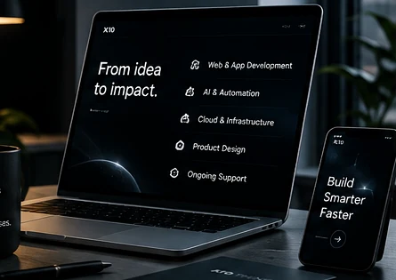

What we do
Software services built for real business use.
From product discovery to engineering, deployment and support, X10 Think covers the full path from an operational problem to a working digital system.

Custom software development
Purpose-built systems for workflows that off-the-shelf software cannot fit cleanly.
Business applicationsInternal tools and operational systems shaped around business processes.
CRM & ERP-style systemsCustomer, sales, inventory, operations and management workflows.
SaaS platformsMulti-user products, role-based systems and subscription-ready foundations.
ModernisationRework outdated or fragmented workflows into maintainable digital systems.
Web & digital platforms
Fast, responsive experiences for businesses, customers and internal teams.
Business websitesProfessional, conversion-aware company and brand websites.
Web applicationsRich interactive products, portals, dashboards and operational tools.
E-commerce & portalsCustomer-facing workflows, catalogues, service and account experiences.
DashboardsClear interfaces for management data, tracking and decision support.
AI & automation
AI features and automated workflows applied where they can produce measurable operational value.
AI-enabled applicationsEmbed language, reasoning or intelligent assistance into digital products.
Assistants & chat systemsTask-focused assistants for internal teams or customer-facing workflows.
Workflow automationConnect repetitive steps, systems and notifications into reliable flows.
AI integrationsConnect suitable AI capabilities to existing business software and data flows.
Mobile applications
Mobile-first products for customers, field teams and business operations.
Customer appsMobile journeys for service access, bookings, accounts and engagement.
Operational appsTools for teams that need workflows away from a desktop.
Cross-platform deliveryEfficient mobile delivery where shared foundations are the right fit.
API-connected experiencesSecure mobile interfaces connected to business backends and platforms.
Product design & UI/UX
Product thinking and interface design that make complex workflows easier to understand and use.
Product discoveryClarify users, goals, workflows and product scope before build.
UX architectureFlows, information structure and interaction logic.
UI designProfessional interface systems with strong visual hierarchy.
PrototypingValidate key journeys before committing to full engineering.
Cloud, backend & integration
The engineering underneath the interface: secure services, APIs, data and deployment.
Backend & APIsBusiness logic, authentication, integrations and service architecture.
Database solutionsStructured data models and reliable persistence for business systems.
Deployment & cloudProduction-ready hosting, environments and release workflows.
Maintenance & supportOngoing technical improvements, fixes and product evolution.
Need a fit-for-purpose system?
Bring us the problem, not a perfect specification.
We can help shape the right scope before development starts.